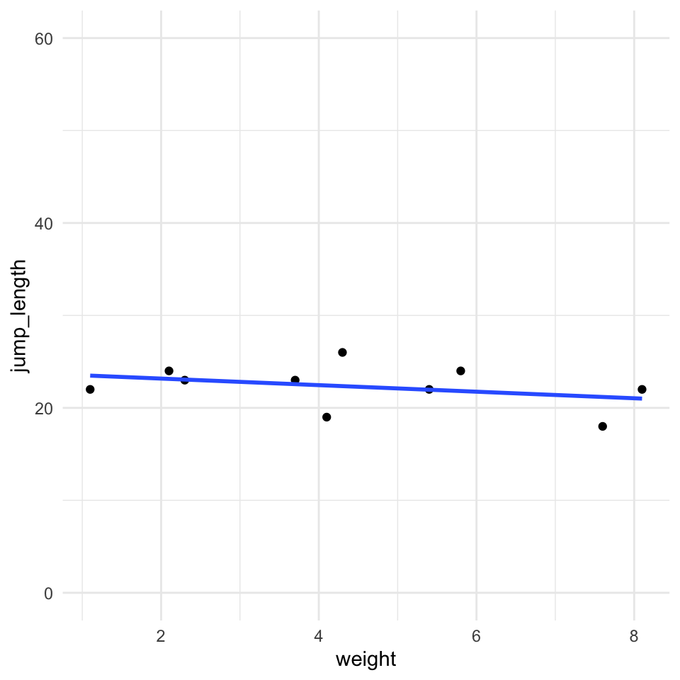
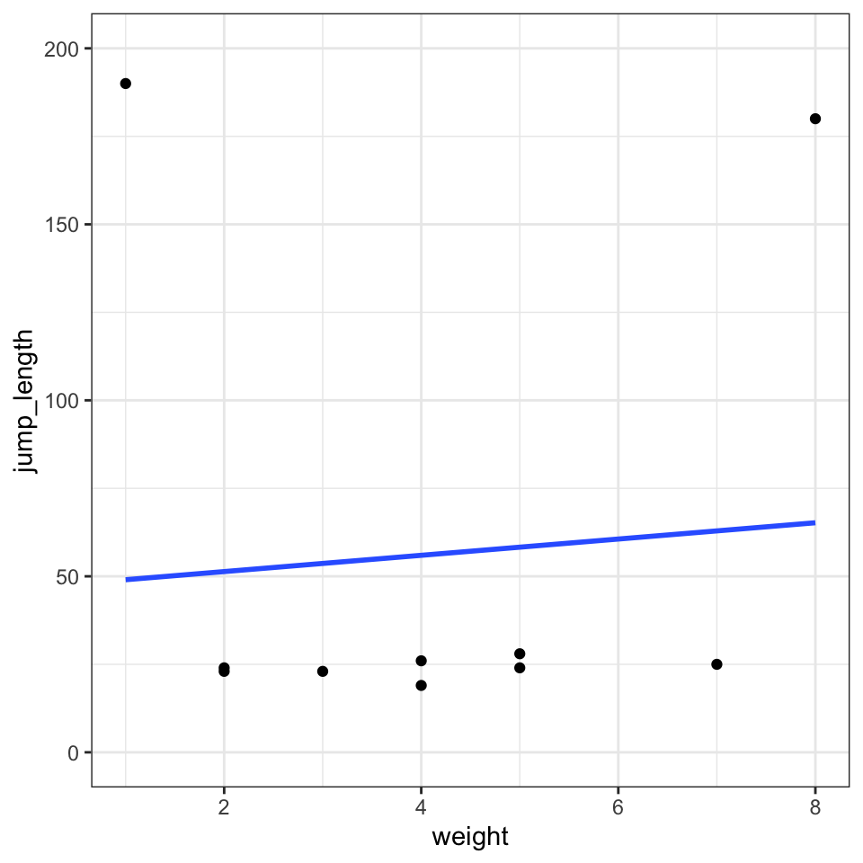
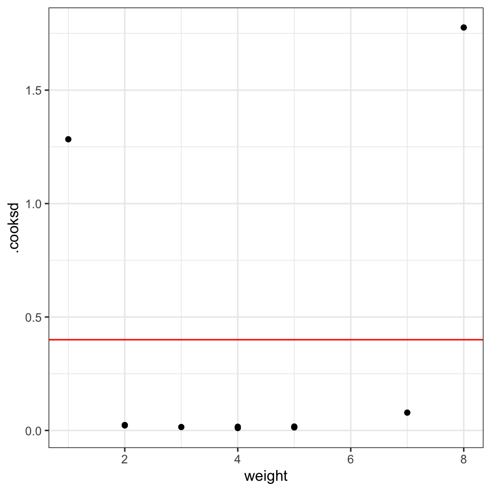
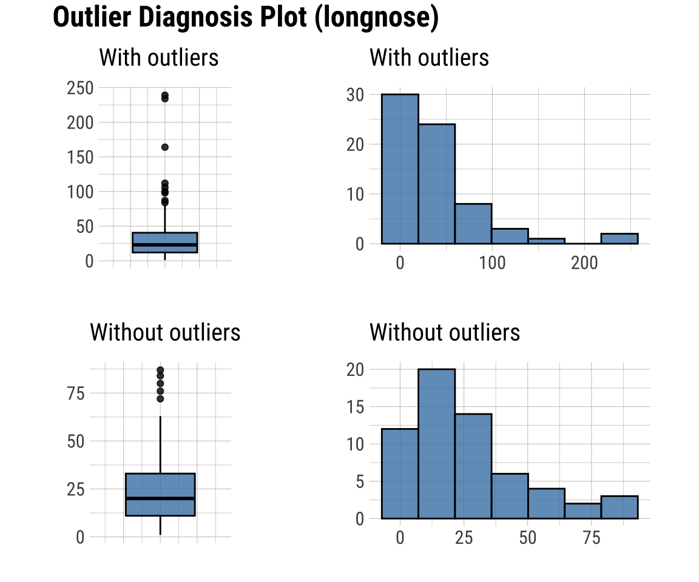
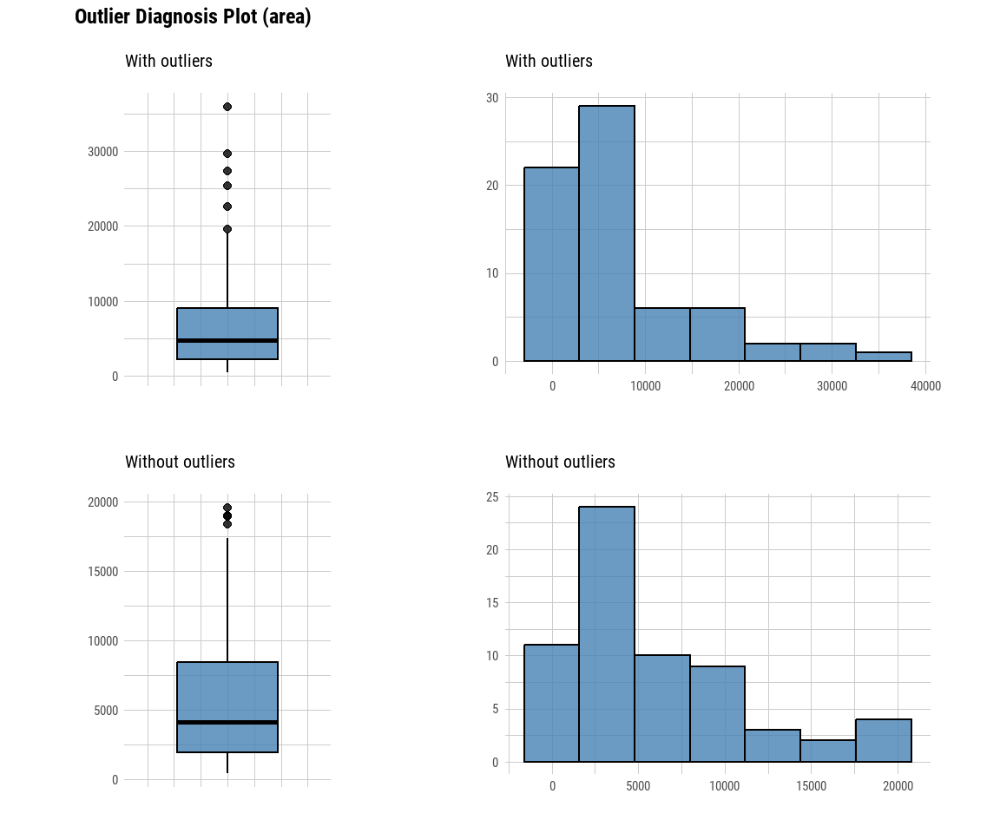
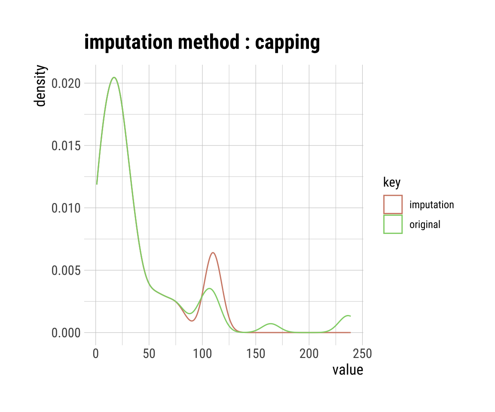
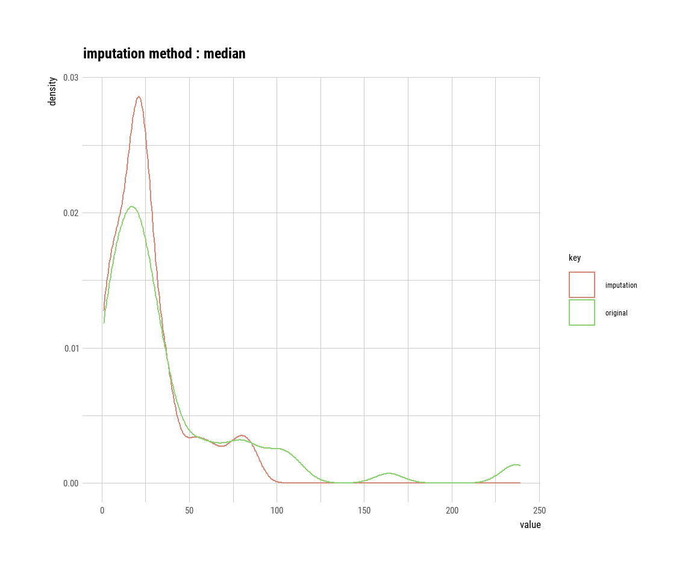

pacman::p_load(tidyverse, magrittr, dlookr, broom, readxl,
see, performance,
conflicted)
conflict_prefer("select", "dplyr")
conflict_prefer("filter", "dplyr")
conflict_prefer("mutate", "dplyr")
conflict_prefer("extract", "magrittr")
conflict_prefer("set_names", "magrittr")
cbbPalette <- c("#000000", "#E69F00", "#56B4E9", "#009E73",
"#F0E442", "#0072B2", "#D55E00", "#CC79A7")41 Ausreißer
Letzte Änderung am 13. January 2024 um 19:52:35
Was sind Ausreißer (eng. Outlier) in einem Datensatz? An sich schon eine schwierige Frage. Einige Wissenschaftler behaupten es gebe keine Ausreißer. Die Daten müssten so ausgewertet werden wie die Daten erhoben wurden. Was es gäbe wären technische Artefakte, diese müssten entdeckt und entfernt werden. Andere Wissenschaftler meinen, dass Ausreißer schon existieren und entfernt werden müssen, wenn diese Ausreißer nicht zu der Fragestellung oder den restlichen Daten passen. Es ist eine unbekannte Subpopulation, die sich mit einem oder zwei Vertretern in unsere Daten geschmuggelt hat. Diese Subpopulation verzerrt nur das Ergebnis, da wir mit diesen wenigen anderen Beobachtungen sowieso keine Aussage treffen können. Am Ende geht es aber darum Ausreißer zu finden und diese aus den Daten zu entfernen. Wir setzen dann diese Werte der Ausreißer auf NA für fehlender Wert (eng. not available). Oder aber wir ersetzen die Ausreißer durch passendere Werte aus unseren Daten. Im Prinzip ein wenig wie finde den Ausreißer und imputiere den Ausreißer mit einer anderen Zahl. Mehr zur Imputation von fehlenden Werten findest du in Kapitel 42. Vermeide bitte eine Ausreißer/Imputationsschleife in der du immer wieder Ausreißer findest und diese dann wieder imputierst! Gerade dieses Thema Ausreißer kann sehr gut von biologischen Fachexperten diskutiert werden.
In den folgenden Abschnitten wollen wir uns verschiedene Möglichkeiten der Detektion von Ausreißern annähern. Es geht wie immer von algorithmisch einfach zu komplexer.

Bitte beiße dich nicht an der statistischen Auslegung eines Ausreißers fest. Du bist der Herr oder die Frau über deine Daten. Kein Algorithmus weis mehr als du. Das macht statistischen Engel natürlich traurig…
Bitte beachte, dass wenn du weist, dass ein Wert nicht richtig ist, diesen dann auch entfernt. Wenn du während der Beprobung feststellst, dass du leider auf dem Feld zu wenig Erde mitgenommen hast, dann trage ein NA in die Tabelle ein. Unsinnige Werte einzutragen nur weil die ja so entstanden sind, macht keinen Sinn. Auch kann es sein, dass du dich mal vertippst. Das heist, du hast in die Exceltabelle eine 0 oder ein Komma falsch gesetzt. Das findest du jetzt in der explorativen Datenanalyse raus. Dann bitte korrigiere diese Werte und mache bitte nicht hier mit der Detektion von Ausreißern weiter. Wenn du selber weist, warum da so ein komischer Wert in der Tabelle steht, dann korrigiere den Wert und schreibe in deinen Bericht, was du getan hast.
Sensitivitätsanalysen nach der Entfernung von Ausreißer
Nachdem wir Beobachtungen aus unseren Daten entfernt haben, ist es üblich noch eine Sensitivitätsanalysen durchzuführen. Wir Vergleich dann das gereinigte Modell mit anderen Modellen. Oder wir wollen die Frage beantworten, was hat eigentlich mein Entfernen von Ausreßern am Ergebnis geändert? Habe ich eine wichtige Beobachtung rausgeschmissen? Das machen wir dann gesammelt in dem Kapitel 43 zu den Sensitivitätsanalysen.
41.1 Genutzte R Pakete
Wir wollen folgende R Pakete in diesem Kapitel nutzen.
Am Ende des Kapitels findest du nochmal den gesamten R Code in einem Rutsch zum selber durchführen oder aber kopieren.
41.2 Daten
Um die Detektion von Ausreißern besser zu verstehen, schauen wir uns zwei Beispieldaten an. Zum einen den Datensatz zu den langnasigen Hechten. Der Datensatz der langnasigen Hechte ist ein echter Datensatz, so dass wir hier eventuell Ausreißer finden werden.
longnose_tbl <- read_csv2("data/longnose.csv") In der Tabelle 41.1 ist der Datensatz longnose_tbl nochmal für die ersten sieben Zeilen dargestellt. Wir haben hier keine fehlenden Werte vorliegen.
| stream | longnose | area | do2 | maxdepth | no3 | so4 | temp |
|---|---|---|---|---|---|---|---|
| basin_run | 13 | 2528 | 9.6 | 80 | 2.28 | 16.75 | 15.3 |
| bear_br | 12 | 3333 | 8.5 | 83 | 5.34 | 7.74 | 19.4 |
| bear_cr | 54 | 19611 | 8.3 | 96 | 0.99 | 10.92 | 19.5 |
| beaver_dam_cr | 19 | 3570 | 9.2 | 56 | 5.44 | 16.53 | 17.0 |
| beaver_run | 37 | 1722 | 8.1 | 43 | 5.66 | 5.91 | 19.3 |
| bennett_cr | 2 | 583 | 9.2 | 51 | 2.26 | 8.81 | 12.9 |
| big_br | 72 | 4790 | 9.4 | 91 | 4.10 | 5.65 | 16.7 |
Im Weiteren betrachten wir noch das Beispiel der Gummibärchendaten. Auch hier haben wir echte Daten vorliegen, so dass wir eventuell Ausreißer entdecken könnten. Da wir hier fehlende Werte in den Daten haben, entfernen wir alle fehlenden Werte mit der Funktion na.omit(). Damit löschen wir jede Zeile in den Daten, wo mindestens ein fehlender Wert auftritt. Da wir hier mittlerweile sehr viele Daten vorliegen haben, wollen wir das Problem auf die beiden Quellen FU Berlin und dem Girls and Boys Day eingrenzen.
gummi_tbl <- read_excel("data/gummibears.xlsx") %>%
filter(module %in% c("FU Berlin", "Girls and Boys Day")) %>%
select(gender, age, height, semester, most_liked) %>%
mutate(gender = as_factor(gender),
most_liked = as_factor(most_liked)) %>%
na.omit()In der Tabelle 41.2 ist der Datensatz gummi_tbl nochmal für die ersten sieben Zeilen dargestellt. Nun haben wir hier in dem Datensatz zu den Gummibärchen auch keine fehlenden Werte mehr.
| gender | age | height | semester | most_liked |
|---|---|---|---|---|
| m | 35 | 193 | 10 | lightred |
| w | 21 | 159 | 6 | yellow |
| w | 21 | 159 | 6 | white |
| w | 36 | 180 | 10 | white |
| m | 22 | 180 | 3 | white |
| m | 22 | 180 | 3 | green |
| w | 21 | 163 | 3 | green |
Nun wollen wir uns aber erstmal den simpelsten Fall von Ausreißern und die Problematik dahinter visualisieren.
41.3 Ausreißer mit Cook`s Abstand
Mit der Cook’schen Distanz können wir herausfinden, ob eine einzelne Beobachtung ein Ausreißer im Zusammenhang zu den anderen Beobachtungen ist. Die Cook’sche Distanz misst, wie stark sich alle geschätzten Werte im Modell ändern, wenn der \(i\)-te Datenpunkt gelöscht wird. Veranschaulichen wir uns einmal den Zusammenhang an zwei Beispieldaten.
Das R Paket olsrr erlaubt eine weitreichende Diagnostik auf Ausreißer für einem normalverteilten Outcome \(y\).
Tabelle 41.3— Zwei Datentabellen zum Vergleich der Detektion von Ausreißern nach Cook’s Abstand.
| weight | jump_length |
|---|---|
| 1.2 | 22 |
| 2.1 | 23 |
| 2.5 | 24 |
| 3.1 | 23 |
| 4.6 | 19 |
| 5.1 | 34 |
| 7.9 | 35 |
| 3.1 | 36 |
| 4.3 | 23 |
| 5.5 | 22 |
| weight | jump_length |
|---|---|
| 1.1 | 190 |
| 2.3 | 23 |
| 2.1 | 24 |
| 3.7 | 23 |
| 4.1 | 19 |
| 5.4 | 24 |
| 7.6 | 25 |
| 4.3 | 26 |
| 5.8 | 28 |
| 8.1 | 180 |
Wir können uns die Daten der Tabelle 41.3 auch als Visualisierung in Abbildung 41.1 anschauen. Wir sehen die starken Ausreißer in der Visualisierung. Das ist auch so gewollt, wir haben die Ausreißer extra sehr extrem gewählt.


Im Folgenden rechnen wir eine simple Gaussian lineare Regression auf den Daten und schauen einmal, was wir dann über die einzelnen Beobachtungen erfahren und ob wir die eingestellten Ausreißer wiederfinden.
fit_cook <- lm(jump_length ~ weight, data = out_tbl)Wir können die Funktion augment() nutzen um die Cook’sche Distanz als .cooksd aus dem linearen Modellfit zu berechnen. Wir lassen uns noch die Variable weight wiedergeben um uns später dann die Visualisierung zu erleichtern.
cook_tbl <- fit_cook %>%
augment %>%
select(weight, .cooksd)
cook_tbl# A tibble: 10 × 2
weight .cooksd
<dbl> <dbl>
1 1.1 1.33
2 2.3 0.0300
3 2.1 0.0321
4 3.7 0.0147
5 4.1 0.0168
6 5.4 0.0158
7 7.6 0.0665
8 4.3 0.0108
9 5.8 0.0150
10 8.1 1.39 Zuerst sehen wir, dass die \(1\)-ste und die \(10\)-te Beobachtung sehr hohe Werte der Cook’schen Distanz haben. Das heist hier ist irgendwas nicht in Ordnung. Das haben wir ja auch so erwartet. Die beiden Beobachtungen sind ja auch unsere erschaffene Ausreißer. Nun brauchen wir noch einen Threshold um zu entscheiden ab wann wir eine Beobachtung als Ausreißer definieren. Es hat sich als “Kulturkonstante” der Wert von \(4/n\) als Threshold etabliert. Berechnen wir also einmal den Threshold für unseren Datensatz indem wir \(4\) durch \(n = 10\) teilen.
cooks_border <- 4/nrow(cook_tbl)
cooks_border[1] 0.4Wir erhalten einen Threshold von \(0.4\) gespeichert in cooks_border. In Abbildung 41.2 haben wir den Threshold einmal eingezeichnet. Auf der x-Achse ist das weight, damit sich die Punkte etwas verteilen. Wir könnten auch den Index auf die x-Achse legen.
ggplot(cook_tbl, aes(weight, .cooksd)) +
geom_point() +
geom_hline(yintercept = cooks_border, color = "red") +
theme_minimal()
Wir können jetzt mit der Funktion which() bestimmen welche Beobachtungen wir als Ausreißer identifizert haben. Was wir jetzt mit den Ausreißern machen, müssen wir uns überlegen. Im Prinzip haben wir zwei Möglichkeiten. Entweder entfernen wir die Beobachtungen aus unserem Datensatz oder aber wir setzen die Werte der Ausreißer auf NA oder eine andere pasendere Zahl.
remove_weight_id <- which(cook_tbl$.cooksd > cooks_border)Weil es hier am Anfang noch relativ einfach sein soll, entfernen wir einfach die beiden Ausreißer aus unseren Daten. Wir erhalten dann einen kleineren Datensatz mit \(n = 8\) Beobachtungen.
out_tbl <- out_tbl[-remove_weight_id,]
out_tbl# A tibble: 8 × 2
weight jump_length
<dbl> <dbl>
1 2.3 23
2 2.1 24
3 3.7 23
4 4.1 19
5 5.4 24
6 7.6 25
7 4.3 26
8 5.8 28Du siehst, dieser Zugang an die Detektion von Ausreißern ist sehr simple. Wir schauen einfach auf die Cook’sche Distanz und haben so einen schnellen Überblick. Ich empfehle auch gerne dieses Vorgehen um einmal einen Überblick über die Daten zu erhalten. Leider leifern nicht alle Modelle eine Cook’sche Distanz, daher müssen wir uns jetzt etwas strecken und noch andere Verfahren einmal ausprobieren.
41.4 Ausreißer mit performance
Nun wollen wir uns den echten Daten zuwenden und dort einmal schauen, ob wir Ausreißer finden können. Wir nutzen hierzu einmal die Funktion check_outliers() aus dem R Paket performance. Die Funktion check_outliers() rechnet nicht eine staistische Maßzahl für die Bestimmung eines Ausreißers sondern eine ganze Reihe an Maßzahlen und gewichtet diese Maßzahlen. Am Ende trifft die Funktion check_outliers() dann eine Entscheidung welche Beobachtungen Aureißer sind. Dabei werden alle Variablen betrachtet. Es gibt keinen Unterschied zwischen \(y\) oder \(x\). Wir nutzen den ganzen Datensatz.
Das R Paket performance hat die Möglichkeit zur Outliers detection (check for influential observations).
check_outliers(longnose_tbl)2 outliers detected: cases 18, 43.
- Based on the following method and threshold: mahalanobis (24.32).
- For variables: longnose, area, do2, maxdepth, no3, so4, temp.Wir finden also sieben Aureißer in unseren Daten. Wir können diese Beobachtungen einmal mit der Funktion extract() rausziehen und uns anschauen. Wie immer mit so Datensätzen erkennen wir hier noch nicht so ein richtiges Muster. Da müssen wir dann nochmal andere Funktionen nutzen.
longnose_tbl %>%
extract(c(8, 17, 18, 21, 28, 43, 44), )# A tibble: 7 × 8
stream longnose area do2 maxdepth no3 so4 temp
<chr> <dbl> <dbl> <dbl> <dbl> <dbl> <dbl> <dbl>
1 big_elk_cr 164 35971 10.2 81 3.2 17.5 13.8
2 conowingo_cr 112 27350 8.5 65 6.95 14.9 24.1
3 dead_run 25 4145 8.7 51 0.34 44.9 23
4 dorsey_run 8 7814 6.8 160 0.44 20.2 22.6
5 haines_br 98 1967 8.6 50 7.71 26.4 16.8
6 mainstem_patuxent_r 239 8636 8.4 150 3.31 5.95 18.1
7 meadow_br 234 4803 8.5 93 5.01 11.0 24.3Ebenso schauen wir einmal bei dem Gummibärchendaten nach, welche der Beobachtungen ein Ausreißer sein könnten.
check_outliers(gummi_tbl)5 outliers detected: cases 98, 111, 114, 115, 197.
- Based on the following method and threshold: mahalanobis (16.27).
- For variables: age, height, semester.Wir wissen ja, dass wir recht viele Beobachtungen haben und wie wir sehen, scheint sich so ein Cluster in den hohen Zweihundertsiebzigern gebildet zu haben. Manchmal echt spanned, was man so finden kann.
gummi_tbl %>%
extract(c(95, 119, 122, 179), )# A tibble: 4 × 5
gender age height semester most_liked
<fct> <dbl> <dbl> <dbl> <fct>
1 w 18 172 3 darkred
2 w 27 166 1 darkred
3 m 37 178 1 green
4 w 21 178 5 darkred Am Ende muss man dann bei der Funktion check_outliers() daran glauben, dass es sich um Ausreißer handelt. Wir müssen uns dann die Daten genau anschauen und entscheiden, ob wir wirklich so viele Beobachtungen entfernen wollen. Darüber hinaus wisen wir jetzt gar nicht, warum wir eine Beobachtung als Ausreißer definiert haben. Dafür müsstest du dann tiefer in die Funktion mit der Hilfeseite ?check_outliers() einsteigen.
41.5 Ausreißer mit dlookr
Eine weitere Möglichkeit Ausreißer zu finden bietet das R Paket dlookr mit der Funktion diagnose_outlier(). Neben dieser Funkion hat das R Paket dlookr noch eine Vielzahl an weiteren Funktionen, die im Bereich der explorativen Datenanalyse von nutzen sein mögen. Schau dir einfach einmal das R Paket und die Webseite näher an.
Das R Paket dlookr hat eine große Auswahl an simplen Algorithmen für die Anpassung von Ausreißern.
Wir wollen hier jetzt nur die Funktion diagnose_outlier() und plot_outlier() nutzen. Also wir werden zuerst die Ausreißer finden und dann die Ausreißer einmal visualisieren. Im Gegensatz zu dem R Paket performance nutzt das R Paket dlookr nicht eine große Auswahl an Algorithmen und pooled die Ergebnisse. Wir schauen einmal was wir so finden und was die Vorteile und Nachteile sind.
diagnose_outlier(longnose_tbl) %>%
filter(outliers_cnt > 0) %>%
arrange(desc(outliers_cnt))# A tibble: 6 × 6
variables outliers_cnt outliers_ratio outliers_mean with_mean without_mean
<chr> <int> <dbl> <dbl> <dbl> <dbl>
1 longnose 7 10.3 150. 38.8 26
2 area 5 7.35 28204. 7565. 5927.
3 so4 3 4.41 32.0 11.7 10.7
4 do2 2 2.94 9.15 8.76 8.75
5 maxdepth 2 2.94 155 72.6 70.1
6 no3 1 1.47 7.71 2.67 2.60Nachdem wir wieder den ganzen Datensatz unser langnasigen Hechte in dei Funktion diagnose_outlier() gesteckt haben, kriegen wir einen Datensatz wieder in dem jede Variable mit ihrer anzahl an Ausreißern outliers_cnt angezeigt wird. Wir haben also \(7\) Ausreißer in dem Outcome longnose sowie in anderen Variablen für \(x\). Schauen wir uns einmal die Ausreißer und deren Effekt in der Abbildung 41.3 an.
longnose_tbl %>% plot_outlier(longnose)
longnose_tbl %>% plot_outlier(area)
longnose.
area.longnose und area mit und ohne Ausreißer.In Abbildung 41.3 (a) sehen wir den Boxplot und das Histogramm der des Outcomes longnose einmal mit den Ausreißern und einmal ohne die Ausreißer. Wie du sehen kannst ändert sih die Verteilung des Outcomes dramatisch, wenn wir die Ausreißer entfernen. Deshalb müssen wir besonders bei einem Outcome gut überlegen, ob es eine gute Idee ist, die Ausreißer zu entfernen. Auch in Abbildung 41.3 (b) sehen wir für die Variable area die Boxplots und das Histogramm einmal mit den Ausreißern und einmal ohne die Ausreißer. Auch hier sehen wir eine Veränderung in der Verteilung, wenn wir die Ausreißer entfernen. Du siehst, Ausreißer sind immer Teil der Daten und ändern deren Verteilung.
Wir machen jetzt einfach weiter und stören uns nicht an möglichen biologischen Implikationen. Wir wollen jetzt die Ausreißer nicht nur entfernen, sondern durch neue Datenpunkte ersetzen. Faktisch imputieren wir die Ausreißer. Wenn unsere zu imputierende Variable kontinuierlich ist, dann können wir folgende Verfahren nutzen um die Ausreißer in der Variablen zu ersetzen.
- mean: Wir ersetzen die gefundenen Ausreißer mit dem Mittelwert der Variable.
- median : Wir ersetzen die gefundenen Ausreißer mit dem Median der Variable.
- mode : Wir ersetzen die gefundenen Ausreißer mit dem Modus der Variable. Also dem am meisten vorkommenden Wert in der Variable.
- capping : Wir imputieren die “oberen” Ausreißer mit dem 95% Quantile und die “unteren” Ausreißer mit dem 5% Quantile. Wir schneiden sozusagen die Verteilungsenden ab.
Im folgenden nutzen wir einmal das capping oder die Quantileimputation sowie die median Imputation. Schauen wir mal was dann pasiert.
longnose_imp_tbl <- longnose_tbl %>%
mutate(longnose_capping = imputate_outlier(., longnose, method = "capping"),
longnose_median = imputate_outlier(., longnose, method = "median"))In Abbildung 41.4 sehen wir die beiden Imputationsmethoden capping und median für die Ausreißer in den Daten einmal dargestellt. Wir sehen das in der Abbildung 41.4 (a) durch die Quantilimputation die Ausreißer alle nach links geschoben werden. Es entsteht ein neues lokales Maximum. Ob das so sinnvoll ist, sei mal dahingestellt. Der Vorteil ist, dass sich dadurch die anderen Teile der Verteilung nicht ändern. Wenn wir die Medianimputation durchführen, dann erhöhen wir das Maximum der ursprünglichen Verteilung noch weiter. Dafür verlieren wir dann eben alle Werte über Einhundert. Hier müssen wir vermutlich wirklich mal an die Sensitivitätsanalyse ran.
pluck(longnose_imp_tbl, "longnose_capping") %>%
plot
pluck(longnose_imp_tbl, "longnose_median") %>%
plot

Wie du siehst ist eine Detektion von Ausreißern nicht so einfach. Zum einen brauchen wir dazu Daten, damit wir auch Ausrißer finden können. Zu irgendwas müssen wir ja die einzelnen Beobachtungen vergleichen. Zum anderen können wir durch die Imputation die Verteilung der Daten stark ändern. Es bleibt ein Drahtseilakt.